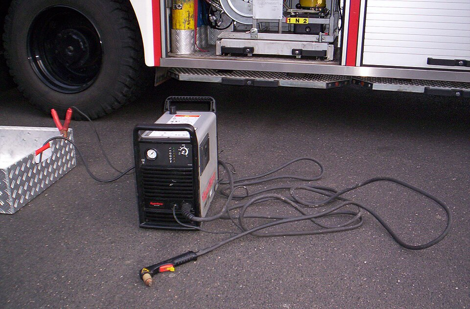

Test plasma-cutter gas delivery and service torch consumables
Work through a Powermax45 XP gas-test case, inspect a cold Duramax Lock torch and prove whether the fault follows the air supply or torch.
Inspect the cold torch before diagnosing power
Work on a Powermax45 XP with the Duramax Lock hand torch for the worked example. Record the exact power source, torch, lead length, process and fault indication. A Powermax45, Powermax45 XP and Powermax45 SYNC can have different consumables and controls. This lesson uses the operator-service scope. Keep the cabinet closed. With the torch cool, isolate mains and the compressed-air supply and release retained pressure as the operator manual specifies before removing operator-serviceable parts.

Photo by Thomas S., resized with labels added. Original photo · Public domain.


Photo from Museo Nazionale della Scienza e della Tecnologia Leonardo da Vinci, Milan, scaled with labels. Original photograph · CC BY-SA 4.0.

Watch the two tests separately. The setup clip shows the Duramax Lock hand torch, cable connection and front controls. At 2:30 of the second clip, identify where the Powermax45 XP displays its set and actual values in gas-test mode. Use the actual operator manual to confirm the mode and procedure. Hypertherm's machine and torch setup · Hypertherm's Powermax45 XP gas test.
Lay out the consumables in order
Use a cool isolated spare or detached training torch. Set out a tray for the parts. Identify the shield, retaining cap, nozzle, electrode and swirl ring using the manual's drawing for your cutting process. Photograph the order and record the numbers from the packaging where parts are unmarked. Do not assume a cartridge for a SYNC torch is interchangeable with a loose Duramax stack.
Compare each piece against a proven matching set under good light. Look for an oval nozzle bore, marks or deposits on the shield, cracks or obstructed holes in the swirl ring and excessive pitting in the electrode. Use the model's service limits and replacement guidance. Keep the two sets separate. Forcing a gauge or pick through a bore can change the part you were trying to inspect.
Use the documented sequence to assemble the correct set. The Powermax45 XP manual calls for finger-tight consumables. Observe the cap seating and cold cable condition. Damage to the torch body, lead insulation or connector goes to the suitable service bench. Powermax45 XP operator manual, pages 48–50 and 165–166 · Hypertherm's exact torch and part options.
Read the air path under demand
A regulator can show normal pressure with air stopped. A blocked element, narrow hose, poor quick coupling or weak supply only becomes apparent when the machine demands flow. Compare the regulator outlet and the machine inlet during the same gas-test interval. Keep the same mode, lead, supply setting and pressure units. The front display's actual outlet reading and an external inlet gauge measure different points. Their readings should be evaluated against their respective specifications. T52 pressure drop and flow.
Use this recorded training case away from a powered cutter. To gather live evidence later, have a competent operator use the manual's gas-only test with the cabinet closed and the correctly assembled torch pointed safely away. Keep people and loose objects clear. Use the facility's rated gauges and fittings with verified depressurisation for any changes. Log the manual's specified minimum inlet condition for the exact mode and lead before calling a result acceptable.
| Recorded case (illustrative) | Air stopped | During the same gas test | Decision |
|---|---|---|---|
| Original delivery hose and coupling | About 6.0 bar at both points | 5.9 bar after regulator, 3.2 bar at machine inlet | The largest loss is between these points. Check that hose, couplings and any filter in that span. |
| Known-good correctly sized delivery assembly | About 6.0 bar at both points | 5.9 bar after regulator, 5.5 bar at machine inlet | The loss shrank at the same demand. Confirm gas test and return-to-service behaviour before calling the torch faulty. |
| Supply also falls when gas starts | About 6.0 bar at both points | 3.3 bar after regulator, 3.1 bar at inlet | Measure farther upstream under the same demand. Investigate upstream supply, regulator or air preparation before buying a torch. |
Return the job with the fault reproduced and resolved
If the same fault persists on a known supply with the correct consumables, record whether there is no gas, gas without ignition, or ignition without transfer. A poor work connection is a separate branch for an arc that starts but does not transfer. Use the OEM service route for internal electrical faults. For a completed repair have the authorised operator repeat the original complaint under comparable conditions and perform the approved return checks. Record matched parts, flowing readings and a sample cut where applicable. Never bridge a cap or torch interlock for a test. W06 return-to-service record.